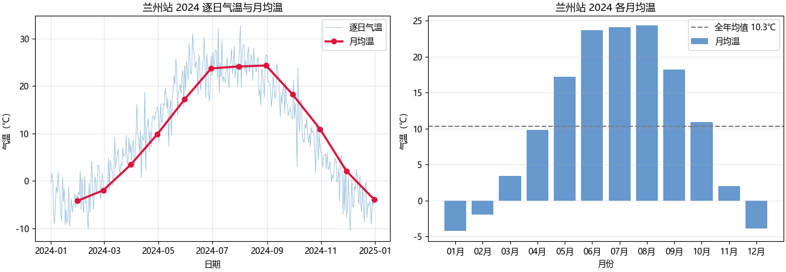

备注
Go to the end to download the full example code.
Pandas 气温月度分析#
用 Pandas 对兰州站 2024 年全年逐日气温做「月度统计」与「高温日筛选」。
说明：在实际项目中，你通常会把观测数据先导出成 CSV，再用
pd.read_csv() 读回 DataFrame。这里为了让画廊示例可以脱离真
实文件独立复现执行，我们直接用一个「全年余弦气温周期 + 随机扰动」
在脚本内构造一整年的逐日气温数据（近 40 年兰州平均气温约 10 ℃，
年振幅约 15 ℃，折算成一个标准余弦波）。需要真实数据时，把下面的
构造过程替换成一句 df = pd.read_csv("lanzhou_temp_2024.csv", ...
) 即可。
本示例用到的四个 Pandas 基本功，是气象观测数据处理的日常：
pd.to_datetime把日期字符串解析成时间类型；groupby(pd.Grouper(freq="ME"))按「年-月」分组聚合（不能用dt.month，跨年同月会错误合并）；布尔索引筛选高温日，并用
.copy()规避链式赋值警告；to_csv把结果导出，避免中文乱码。
代码分成五节，与上面四步 + 最后的绘图一一对应。
① 导入库，并配置中文字体#
中文绘图必须显式指定可用字体，并关闭负号（−）被替换成方块的问题。
import numpy as np
import pandas as pd
import matplotlib.pyplot as plt
plt.rcParams["font.sans-serif"] = [
"Microsoft YaHei",
"SimHei",
"Noto Sans CJK SC",
"DejaVu Sans",
]
plt.rcParams["axes.unicode_minus"] = False
② 构造兰州站 2024 年全年逐日气温 DataFrame#
用一整天为步长的日期序列，叠加「年周期余弦 + 随机扰动」。 这样构造的是逐日数据点，周期是 365 天 —— 体温感堪比真实兰州的一年四季。
rng = np.random.default_rng(2024)
dates = pd.date_range("2024-01-01", "2024-12-31", freq="D")
# 一年 365 天，用 'day of year' 归一化到 0~2π，得到年周期
doy = dates.dayofyear.to_numpy(dtype=float)
# 平均温 10.5℃、年振幅 15℃。北半球大陆性气候：
# 余弦在 7 月中旬（约第 198 天）取最大值，1 月中旬取最小值，
# 恰好对上兰州「冬冷夏热」的季风气候特征。
mean_temp = 10.5
amplitude = 15.0
peak_doy = 198.0 # 7 月中旬，全年最热
periodic = mean_temp + amplitude * np.cos((doy - peak_doy) / 365.0 * 2 * np.pi)
# 随机扰动：模拟日际波动，夏天偶尔突破 30℃，凑出真实的「高温日」
noise = rng.normal(loc=0.0, scale=3.5, size=len(dates))
temp = periodic + noise
df = pd.DataFrame(
{
"date": dates,
"station_id": "兰州",
"temp": temp.round(1),
}
)
print("构造完成，行数：", len(df))
print(df.head())
print(df["temp"].min(), "~", df["temp"].max(), "℃")
构造完成，行数： 366
date station_id temp
0 2024-01-01 兰州 -0.4
1 2024-01-02 兰州 1.6
2 2024-01-03 兰州 -0.1
3 2024-01-04 兰州 -7.6
4 2024-01-05 兰州 -9.1
-10.5 ~ 32.7 ℃
③ 月度分组聚合：月均温 / 月最高 / 月最低#
先确保 date 是时间类型
df["date"] = pd.to_datetime(df["date"])
# 用 pd.Grouper(freq="ME") 按「年-月」分组（ME 为 pandas 2.2+ 的月末别名），2024-01 不会与他人合并
month_stats = (
df.groupby(pd.Grouper(key="date", freq="ME"))["temp"]
.agg(["mean", "max", "min"])
.round(1)
)
month_stats.columns = ["月均温", "月最高温", "月最低温"]
print("\n==== 兰州站 2024 年月度统计 ====")
print(month_stats)
==== 兰州站 2024 年月度统计 ====
月均温 月最高温 月最低温
date
2024-01-31 -4.2 1.9 -9.6
2024-02-29 -2.0 4.1 -10.2
2024-03-31 3.4 9.6 -2.6
2024-04-30 9.8 18.7 0.8
2024-05-31 17.2 25.6 7.3
2024-06-30 23.7 31.0 16.8
2024-07-31 24.1 32.1 18.5
2024-08-31 24.3 32.7 16.0
2024-09-30 18.2 26.4 13.0
2024-10-31 10.9 23.8 1.7
2024-11-30 2.0 6.0 -7.8
2024-12-31 -3.9 2.4 -10.5
④ 筛选高温日（temp ≥ 30℃），用 .copy() 规避警告#
hot_days = df[df["temp"] >= 30].copy()
print("\n高温日（≥30℃）数量：", len(hot_days))
print(hot_days.head())
高温日（≥30℃）数量： 4
date station_id temp
160 2024-06-09 兰州 31.0
173 2024-06-22 兰州 30.3
189 2024-07-08 兰州 32.1
214 2024-08-02 兰州 32.7
⑤ 绘图：左图逐日气温曲线 + 月均温折线，右图月均温柱状图#
fig, ax = plt.subplots(1, 2, figsize=(13, 4.5), constrained_layout=True)
# 左图：逐日散点 + 月均温折线叠加
ax[0].plot(df["date"], df["temp"], lw=0.6, alpha=0.5, label="逐日气温")
ax[0].plot(
month_stats.index,
month_stats["月均温"],
color="crimson",
lw=2.5,
marker="o",
label="月均温",
)
ax[0].set_title("兰州站 2024 逐日气温与月均温")
ax[0].set_xlabel("日期")
ax[0].set_ylabel("气温（℃）")
ax[0].legend()
ax[0].grid(alpha=0.3)
# 右图：月度均温柱状图
ax[1].bar(
month_stats.index.strftime("%m月"),
month_stats["月均温"],
color="#4C86C6",
alpha=0.85,
label="月均温",
)
ax[1].axhline(month_stats["月均温"].mean(), color="gray", ls="--",
label=f"全年均值 {month_stats['月均温'].mean():.1f}℃")
ax[1].set_title("兰州站 2024 各月均温")
ax[1].set_xlabel("月份")
ax[1].set_ylabel("气温（℃）")
ax[1].legend()
ax[1].grid(alpha=0.3, axis="y")
# 导出结果（utf-8-sig 防 Excel 中文乱码）
month_stats.to_csv("lanzhou_month_stats.csv", encoding="utf-8-sig")
hot_days.to_csv("lanzhou_hot_days.csv", index=False, encoding="utf-8-sig")
print("\n已生成：month_stats 汇总 + 高温日记录（随示例自动导出）")
plt.show()

已生成：month_stats 汇总 + 高温日记录（随示例自动导出）
Total running time of the script: (0 minutes 0.494 seconds)